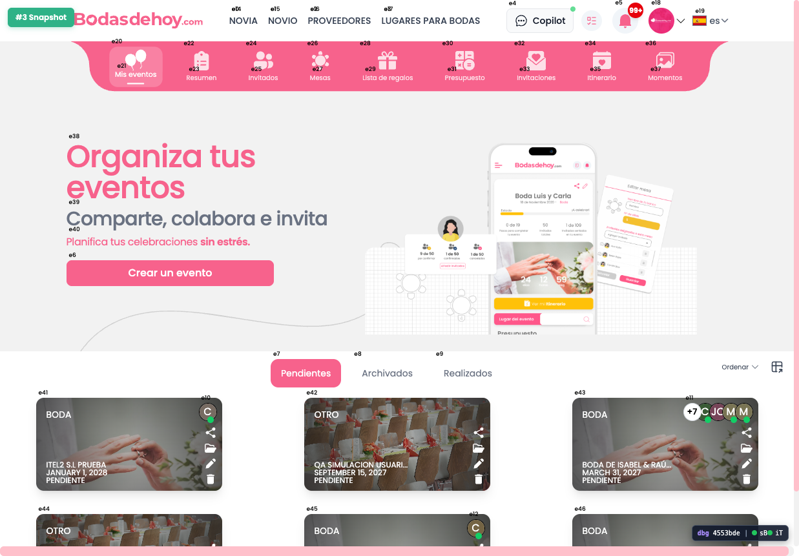
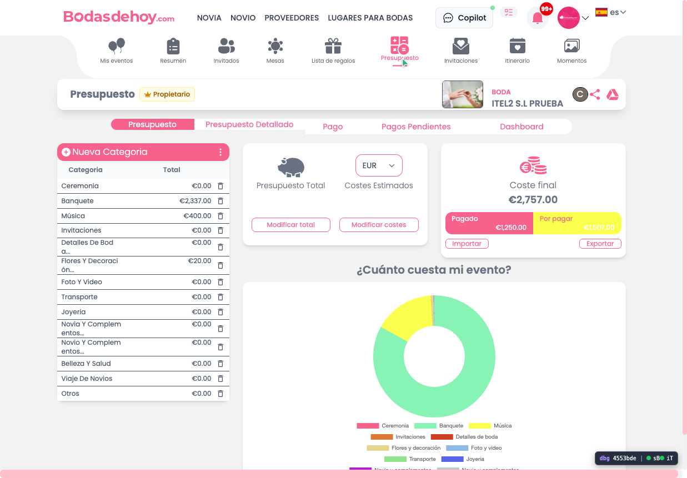
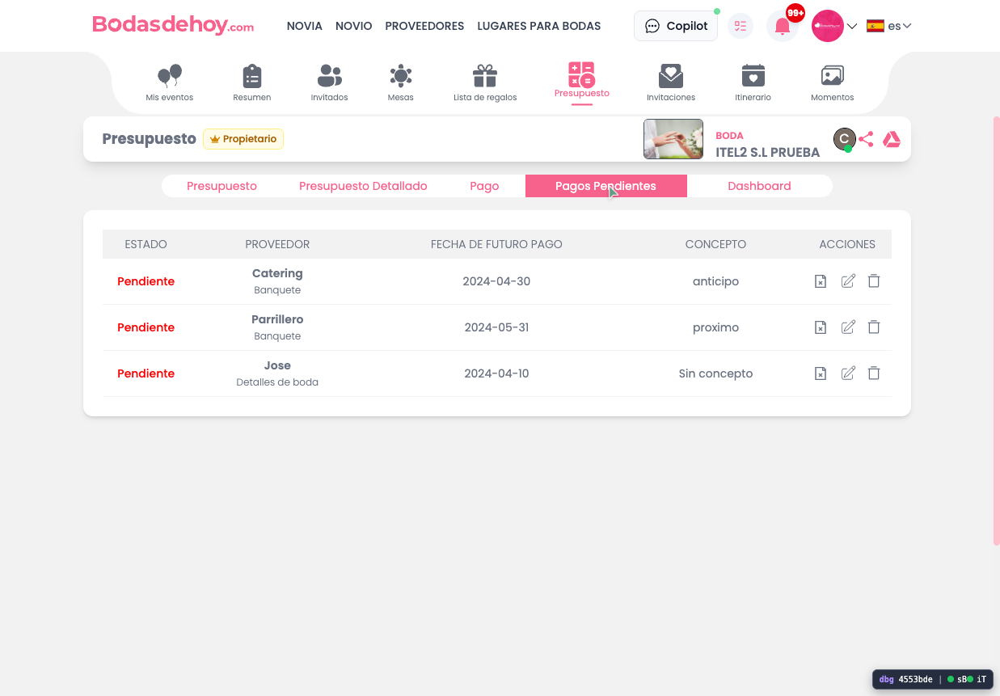
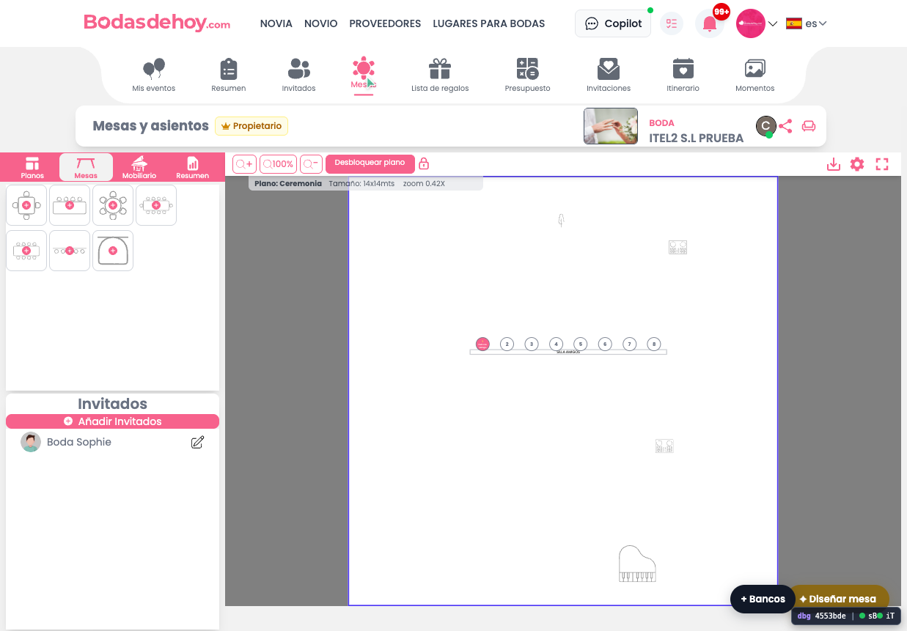
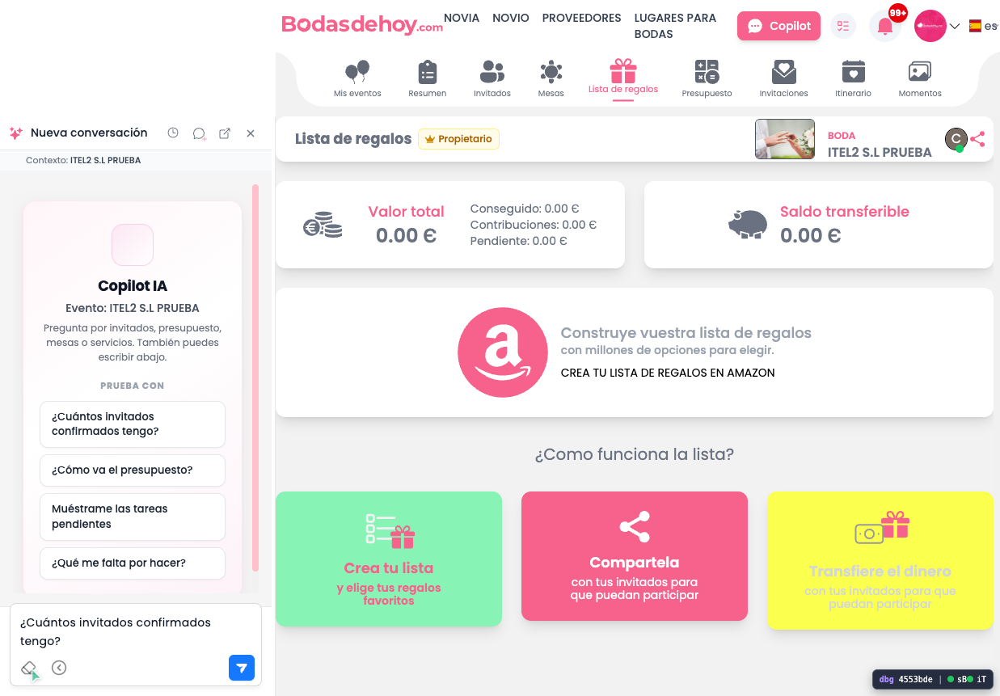
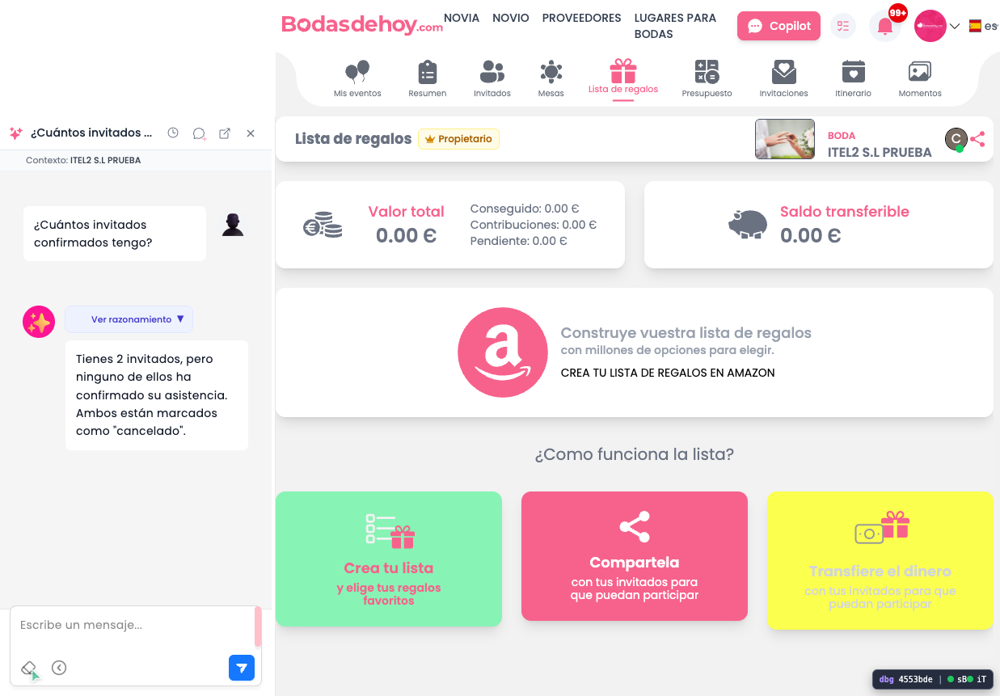
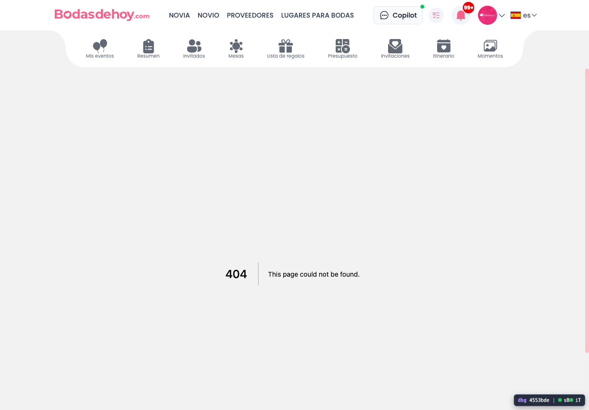

Informe técnico QA visual consolidado sobre fixes del 10-jul
Resumen ejecutivo
La batería QA visual ya puede considerarse consolidada. El BUG #1 en /presupuesto no reprodujo el crash histórico, el BUG #2 logró cerrar sesión fría con acceso válido tras corregir la contraseña del DUEÑO, el BUG #4 no reprodujo el mensaje fantasma de Saldo insuficiente en las rutas válidas probadas y, en paralelo, aparecieron dos regresiones/hallazgos críticos: el Copilot deja un modal persistente Cancel / OK encima de la respuesta y el menú superior envía a rutas 404.
PASA para BUG #1 y BUG #4. MIXTO para BUG #2 porque el login frío por email/password sí cerró correctamente, aunque queda antecedente visual de Google colgado tras logout. FALLA en BUG #3 por modal persistente sobre la respuesta del Copilot y en BUG #5 por navegación del menú superior a 404.
Contexto y método
La ejecución se hizo como usuario final sobre app-dev, con observación de pantalla, navegación, capturas, consola y red. Se evitó manipular el fixture protegido “Boda de Isabel y Raúl” y se trabajó sobre el evento visible ITEL2 S.L PRUEBA para Presupuesto, Copilot, Lista de regalos e Invitados.
La verificación del build fue positiva: en red apareció /_next/static/Hnk5mdrQTK5452DDI-GC8/_buildManifest.js. También se registraron errores transversales de consola no necesariamente bloqueantes, como Minified React error #418, [getThemeColors] TypeError, react-i18next sin instancia y abortos de red hacia embeds de chat-dev.
Resultados por bug
BUG #1 · crash en /presupuesto
| Prueba | Estado | URL final | Observado |
|---|---|---|---|
T1.1 |
PASA | https://app-dev.bodasdehoy.com/presupuesto |
Presupuesto cargó mostrando categorías, coste final y bloques financieros. No apareció “Comprobando sesión…” ni los TypeError buscados con delete_url, gastos_array o coste_final. |
T1.2 |
PASA | https://app-dev.bodasdehoy.com/presupuesto |
Los tabs internos Pagos Pendientes, Presupuesto Detallado y Dashboard cambiaron correctamente sin pantalla roja ni texto de comprobación de sesión. |
T1.3 |
PASA | https://app-dev.bodasdehoy.com/mesas |
La navegación mixta Invitados → Presupuesto → Pagos Pendientes → Mesas fluyó sin salto al home ni remount visible del evento. |
T1.4 |
PASA | https://app-dev.bodasdehoy.com/presupuesto |
En la segunda mitad de la batería se volvió a entrar en /presupuesto con Copilot abierto y la pantalla siguió cargando categorías, coste final, pagado y por pagar sin reaparecer el crash histórico. |
BUG #2 · AuthContext / sesión fría
| Prueba | Estado | URL final | Observado |
|---|---|---|---|
T2.1 |
MIXTO | https://app-dev.bodasdehoy.com/login → https://app-dev.bodasdehoy.com/ |
Tras corregir la contraseña facilitada por el usuario, el login frío del DUEÑO por email/password sí completó correctamente y llegó al dashboard. Queda como antecedente de la misma batería que, en un intento previo tras logout, Google pudo quedar visualmente atascado en Conectando... con timeout de seguridad de 3 segundos. |
BUG #3 · Copilot invitados
| Prueba | Estado | URL final | Observado |
|---|---|---|---|
T3.1 |
FALLA | https://app-dev.bodasdehoy.com/lista-regalos |
Con Copilot abierto en el evento ITEL2 S.L PRUEBA, la pregunta ¿Cuántos invitados confirmados tengo? sí generó respuesta útil y trazó POST /api/copilot/chat, pero la UI dejó un modal con icono exclamation-circle y botones Cancel / OK superpuesto incluso cuando la respuesta ya estaba renderizada: Tienes 2 invitados, pero ninguno de ellos ha confirmado su asistencia. Ambos están marcados como "cancelado". |
BUG #4 · saldo insuficiente fantasma
| Prueba | Estado | URL final | Observado |
|---|---|---|---|
T4.1 |
PASA | /lista-regalos → /presupuesto → /invitados |
Con el Copilot abierto y conservando la respuesta previa, la navegación interna válida del evento no mostró ningún texto de Saldo insuficiente, ni toast fantasma, ni bloqueo visual comparable al bug reportado. |
BUG #5 · navegación menú superior
| Prueba | Estado | URL final | Observado |
|---|---|---|---|
T5.1 |
FALLA | https://app-dev.bodasdehoy.com/categoria/novias |
El enlace superior Novia cerró el panel del Copilot y navegó a una ruta 404 con texto This page could not be found. |
T5.2 |
FALLA | https://app-dev.bodasdehoy.com/categoria/proveedores |
El enlace superior Proveedores reprodujo el mismo patrón: cambio de URL a ruta de categoría y página 404. El bug ya no es solo de remount o ruta dudosa, sino de navegación rota y visible para usuario final. |
Hallazgos nuevos
- El build objetivo siguió siendo correcto durante la segunda mitad de la batería:
Hnk5mdrQTK5452DDI-GC8. - La corrección de credenciales permitió reabrir la cuenta DUEÑO y cerrar la sesión fría por email/password hasta dashboard.
- El Copilot sí consulta backend y devuelve contenido útil, pero la experiencia queda degradada por un modal persistente no descartado visualmente.
- La navegación interna del evento
lista-regalos → presupuesto → invitadosno reprodujo el mensaje fantasma deSaldo insuficiente. - Los enlaces superiores
NoviayProveedoresestán rotos para usuario final porque llevan a páginas404. - Persisten errores globales de consola no atribuibles directamente al crash de Presupuesto:
Minified React error #418,[getThemeColors] TypeErrory abortos haciachat-devy analítica.
Traza literal útil
[error] Error: Minified React error #418 [error] [getThemeColors] TypeError: Cannot destructure property 'exportedColors' of 'undefined' as it is undefined. [network] POST https://app-dev.bodasdehoy.com/api/copilot/chat [snapshot] "Tienes 2 invitados, pero ninguno de ellos ha confirmado su asistencia. Ambos están marcados como \"cancelado\"." [snapshot] 404 → This page could not be found.
Evidencias
Se incluyen las capturas más representativas tanto de los fixes que se comportan bien como de las regresiones nuevas detectadas. Todas forman parte del paquete final para revisión visual y reenvío al equipo.

app-dev con eventos visibles.
T1.1 · Carga correcta de /presupuesto.
T1.2 · Cambio entre tabs internos sin error visible.
T1.3 · Fin de navegación mixta en /mesas.
T3.1 · Modal Cancel / OK superpuesto tras enviar la pregunta al Copilot.
T3.1 · La respuesta del Copilot aparece, pero el modal de advertencia sigue visible.
T5.1 · El enlace superior Novia lleva a una ruta 404.Conclusión operativa
La foto final para desarrollo queda así: Presupuesto aguanta, el login frío por password ya vuelve a entrar, el saldo fantasma no reapareció en las rutas válidas probadas, pero hay dos regresiones prioritarias que merecen ticket propio: el modal persistente del Copilot y las rutas 404 del menú superior.
Primero corregir BUG #5 porque rompe navegación visible a 404. Después revisar BUG #3 porque el backend del Copilot sí contesta, pero la capa visual deja un modal huérfano que degrada la interacción y puede confundirse con un error bloqueante.